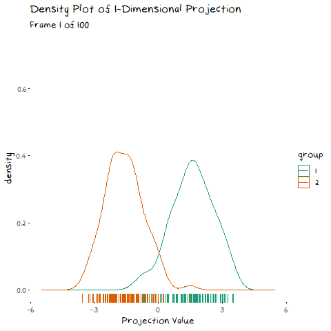
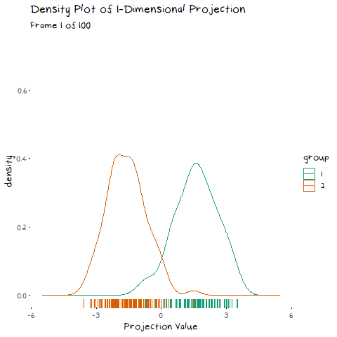

| Review | liked | afinn_sentiment | bing_sentiment | |
|---|---|---|---|---|
| 22 | There is not a deal good enough that would drag me into that establishment again. | No | 0.1333 | 0.0667 |
| 34 | A great way to finish a great. | Yes | 0.8571 | 0.2857 |
| 94 | This place should honestly be blown up. | No | 0.0000 | 0.0000 |
| 103 | To my disbelief, each dish qualified as the worst version of these foods I have ever tasted. | No | -0.1765 | -0.0588 |
| 199 | So they performed. | Yes | 0.0000 | 0.0000 |
A Future Public Disturbance Explains LDA
data visualisation
statistics
teaching
machine learning
Bad Restaurants and LDA are Ruining my Life
I would like to say that I’m the type of person who would never complain at a restaurant, but deep down I know I’m one bad day away from being the woman in a viral video pissing on the floor of a Starbucks because they didn’t give her soy milk. If you would like to see the correlation that makes me think this, see the figure below:

Despite this clear character flaw which I refuse to talk about further, I have never written an online review of a restaurant. I came close earlier this year when my sisters and I decided to spend money we didn’t have on some fine dining, thinking it would be a nice night out. Unsurprisingly from the tone of this post, the experience turned out to be a nightmare. When our waiter eventually asked if we were OK I looked at her with a manic glint in my eyes and told her I was silently praying that something from the ceiling would fall and crush me, so I could escape the eternal purgatory of being trapped in this restaurant. Spending all my money to get the opportunity to wait hours for an onslaught of terrible food, was probably an indicator I had already died and this was some personalized version of hell. Here is a snippet of a review I got halfway through writing, and then forgot about until this very moment.

You could consider my complaints to be wildly privilege and out of touch, but my dog died a year ago, and I would rather relive that than go to this restaurant again. If you are thinking to yourself that I seem to have unhinged emotional responses to slight upsets, you would be correct. So while we are on the topic of out of touch emotional responses, lets talk about Linear Discriminant Analysis (LDA).
Back when I learnt about LDA, I had a regularly maintained page in my notes called “LDA is ruining my life”. Every tutorial for about 4 weeks would be me pointing to a section of the page and asking my tutor why all of it worked the way it did, and why I was too stupid to understand it. Ultimately my issue stemmed from one key question: Is LDA a classification or dimension reduction technique; and if its both, how are they related? I never figured it out, and after the exam, I decided it was something for people greater than myself to know. Or I decided it was not my problem any more. The distinction is unimportant. What is important is that a few weeks ago I overheard someone in the department talking about LDA and I had what I can only describe as machine learning based war flashbacks. So, thanks to this conversation, I reopened the page that hurt me to my soul, and made some plots to help me (and by extension you, the person reading this post) finally understand how LDA works. I’m going to break this down into two sections:
- How LDA classification works in the 1-dimensional case
- How LDA dimension reduction works in the 2-dimensional case and then extends to classification.
For the running example, we are going to look at some restaurant reviews to maintain the theme of “things Harriet has disproportionate emotional reactions to”. If anyone was looking for a sign that I’m running out of ideas, here it is.
LDA for 1 Dimensional-Classification
Theory
LDA is pretty straight forward as far as classification models go. Every time we use a classification model, we are implicitly asking “Which of these groups is more probable?”, LDA just does this very literally. If you are unfamiliar with Bayes theorem (that would be alarming but I’m an adult who said “Who’s Cyprus?” to my housemate the other day so I can hardly judge) it looks like this:
P(Y=k|X=x) = \frac{P(K=k)P(X=x|K=k)}{P(X=x)}
If you don’t have an intuitive sense of Bayes theorem, its actually pretty easy to draw how it works. Lets say we have two groups, and we want to find the probability that an observation belongs to either Class 1 or Class 2 based on our predictors. Since there are two versions of the function (one for Class 1 and one for Class 2), we will have two different possible equations to plot, and so two different densities. To start with, LDA assumes that both classes are normally distributed and have the same variance, so we only need to calculate three things, each of the group means and their shared variance. Once we have these values we can draw the associated normal density, that is P(X=x|K=k) for each value of K.

This is already looking pretty good, but what if each class is not equally probable? Well, we can make these densities more accurate by scaling them by their relative class probability, i.e. P(K=k). So lets say that class 2 is much more likely than class 1, then we end up with this:

Then to finish we just scale both of them down so that they follow the probability axioms. That is, we make sure the probability of belonging to Class 1 + the probability of belonging to Class 2 is not not greater than 1.

With that we end up at the equation for Bayes theorem. Unfortunately this theorem does not give us a classification rule, but rather relative probabilities. To make a rule we could calculate this probability for every class, and then classify our observation to whichever class spits out the largest value of this function, but that is a bit tedious. It would be much easier to have a single value where numbers above it are Class 2 and numbers below are Class 1. Lucky for us, the y-axis here gives a probability, which means for values of x where the Class 2 function is higher, Class 2 is more probable, and vice-versa for Class 1. Therefore, the best place to draw our boundary is when the densities overlap, and both classes are equally probable.

This the basics how LDA classifies observations. The only thing to note, is that it doesn’t do this on the scale of your X variable. It will scale X by some constant such that the classification bound drawn above is at 0, and this new scale is called the Linear Discriminant. To make this a little easier to understand, I can give a real example of 1-Dimensional LDA classification.
Example
While it would be in character for me to sit alone in my room and write hundreds of spiteful restaurant reviews to make a data set, I’m not going to do that. For this analysis I’m going to use a Kaggle data set with about 1000 restaurant reviews, where each observations has two variables; the typed review and a yes/no indicator for whether or not the person liked the food.
Unfortunately if we want to predict if someone liked the food based off their review, the raw version of this data isn’t going to cut it. We need some comparable variables, which means we need a measure of how positive or negative the review is. For this, I’m going to keep it simple, and use a basic sentiment analysis. For those who don’t know, there are several ways to assess the sentiment of a word, i.e. if it has positive or negative feelings associated with it. There are a number of “lexicons” that are just massive data sets that have a word (such as “hate” or “love”) and an associated score for that words sentiment (-5 or +5). I’m going to use two of these for this example; ‘AFINN’ which gives words a score from -5 to 5, and ‘bing’ which rates words as either positive or negative (simplified to 1 or -1 here). To use these as variables in our example data set, I took the average sentiment of the words in the review for that lexicon. Finally we get a dataset with observations that look like this:
Note: These reviews are some of my favourites, they are not a random sample.
Right now, I’m not going to use both of these sentiments. We are still in the one dimensional classification case, so lets stick to the AFINN average. To see how this variable splits the reviews, lets make a density plot of the data similar to the one explained above.

From this plot we can see that these distributions are neither normal, nor have similar variance. You will rarely have data that behaves exactly according to the assumptions. Does this mean we can’t use LDA? Not really, it just means that if (or when) we end up with a boundary that is a bit different to what you would draw yourself, it is probably because of these incorrect assumptions.
If we perform LDA on this data, we can find the coefficient of linear discriminants. Earlier I said that LDA will perform classification on its own scale, and this is how we find it. This value is used the same way it would be in a regression function, where it gives us the coefficients in the formula:
x = 2.929\times AverageSentiment_{AFINN} Where x is the “linear discriminant” for that review. We can plot this variable (although it is just afinn_sentiment scaled by a constant) with the decision bound at 0 to see what our linear discriminant space looks like:

It looks exactly the same except now the border for a 50% threshold is at 0. You may notice this is not where the densities overlap, and that is because LDA has assumed that distribution for “No” reviews is more spread out than it is. While it isn’t perfect, with this example under our belts we can move onto using LDA for dimension reduction.
LDA For Dimension Reduction
Theory
Now we move onto the dimension reduction aspect of LDA. Remember how in the previous example LDA changed the original variable to make its own scale, LD1? Well, that is the dimension reduction part working, although in that case it wasn’t reducing the dimensionality, just scaling it. LDA dimension reduction is actually very similar to Principal Component Analysis (PCA) dimension reduction, in that it uses eigen-decomposition. To avoid going into some complicated details you can find elsewhere, whenever you read eigen-decomposition just think “we found direction of largest variance, represented it as a line, and projected data onto that line” and you know enough to make it through this post.
In my last post, I explained eigen-decomposition and how it is utilized in PCA, but it is much easier to understand when you to see it working. The animation below depicts a scatter plot of data, with a line that rotates around its centre. This line represents a potential direction for us to project our data onto (i.e. a 1-Dimensional representation). When we did PCA, we wanted to pick the line that has the highest variance, that is, had the fattest distribution when plotted as a density plot, and this animation lets us roughly see when that point is:


The point of this is visually show you the value of eigen decomposition. It gives an instant analytical result for what we could try to find with the animation above.
How is this relevant to LDA? Well it also uses an eigen decomposition, but it isn’t as straight forward as the PCA case. Now we have classes that we need to take into account. LDA decomposition works with the goal of minimising the overlap between classes. That is, if we plot the density of the two groups, we want the smallest possible overlap, as shown below.
There are two components of the distributions that come into play when picking this direction: 1) Distance of Class Means. The importance of this bit is pretty obvious. If the two groups are further apart then they have less overlap. Regardless of the features of the data, this will always be an important aspect. 1) Class Variance and Covariance. While having data that is far away is nice, if there is another projection that brings the class means closer, but makes the resulting distribution steeper, it will result in less overlap. Finding a balance between these two components is what allows us to maximise the distance between the two groups, and find the best 1-dimensional projection of the classes. The interaction of these two elements may not be easy to see above, but it will make a lot of sense with some animated examples. In these examples I have added a value called “VarDist” in the corner, I will get to the calculation of this value later, but for right now, know that it represents the interaction of these two components and we are looking to maximise it.
To start, lets take the variance and covariance of the data completely out of the equation and look at a simple case where our variables have no correlation and our classes are just two bivariate normals with different means.


The animation shows two distributions that change in central location, but their shape stays the same. Since the scatter plot shape of each group is essentially circular (due to the 0 correlation of the variables), no matter what direction we project the data into the shape (and therefore variance) will be the same. This means we can ignore the variance and focus on maximising the distance between the means. This is achieved by projecting the data on the line that goes through the two group averages. Moving on from this simple example, lets make things more interesting and look at some data where the variables are correlated.
 

Now we can see two forces at play. Just as before, when the line goes through the two means the data is most separated, but this is no longer the only factor we need to consider. The positive correlation means that the direction we project the data onto can now also flatten or steepen the curve. We can no longer use the line that goes through the two means, because if another direction brings the distributions closer, but also significantly decreases the spread, that would be the preferable option. We can see this in example with negative correlation too.

Now that we have seen how this works intuitively, we can go through how this is calculated. So, how does LDA perform a decomposition that accounts for these two competing elements? It combines two matrices in the eigen-decomposition, the variance covariance matrix and a matrix of the between group averages.
First we want to minimise the within class variance of the projected data. The first important thing to note is that by the assumptions of LDA, all the classes have identical variance-covariance matrices. Therefore to calculate the matrix, we get the variance-covariance matrix of each isolated class, and then average them. The averaging shouldn’t change the values (if your LDA assumptions are correct), it should just makes the estimate more accurate. This is illustrated in the picture below.
Now that we have this matrix, how do we find the projection that minimises the variance instead of maximises? We just perform an eigen-decomposition on the inverse of the matrix. Now that we have taken care of the spread element of LDA, we can take care of the “separating the means” element. For this we create another matrix for the “between group differences”.
This is just a matrix representation of the distance between the classes which is constructed using the method illustrated below. Much like with the eigen-decomposition of the variance-covariance matrix, how this matrix works is not of major significance.
Since we are trying to maximise this, we do the eigen decomposition on the matrix. Finally, to get the direction we are projecting our data onto, we need to just take the eigen decomposition of the combination of these two matrices, that is the matrix \Sigma_V^{-1}\Sigma_B.
In this case, what is the “VarDist” value that appears in the plots?. Well, when you do an eigen-decomposition it analytically finds the direction that maximises the distance between groups, but instead of solving it analytically, we could also solve it iteratively and just check the product of the group variance and between group difference in the 1 dimensional projection for a series of projections and select the one that maximises this value. That is the value that is shown in the corner of the animated plots and its calculation is shown in the formula below:
VarDist=({\frac{(n_1-1)s_1^2+(n_2-1)s_2^2}{n_1+n_2}})^{-1} \times \sum_{i=1}^2(\bar{x_k}-\bar{x})^2
With this information, it should be clear how we get the 1-dimensional representation that best separates the two classes. While a technical understanding is fine, it is easier to see this come together with an example.
Example
Following on from our example before, let’s add in a second variable, the bing sentiment measure. Now that we have two variables we can plot them together on a scatterplot to see their relation.

This plot gives us a few things to note. First of all, this is clearly not two bivariate normal densities, as LDA will assume. Again, this just means our results will be slightly off. In addition to this there are a lot of 0 values for both the AFINN and bing sentiments. This can occur in two circumstances: 1) none of the words in the review appear in that lexicon because they are all neutral (“I’m uncertain I could call that food”), or 2) if the sentiment scores of the words in the review cancel each other out (e.g. “The food was so good I felt bad eating it”). Since this only impacts the assumptions of LDA we are going to power through.
Just like with the classification, we can perform LDA on this dataset and get a formula that calculates the Linear Discriminant for each review. In this example our coefficients give a function that looks like this:
x = 0.800\times AverageSentiment_{AFINN} + 5.576\times Average Sentiment_{bing} Now, instead of the linear discriminant just scaling the variables so the 50/50 probability split is at 0, it is a linear combination of the two variables. How did it get these coefficients? Using the eigen-decomposition described above. Again, we can calculate the linear discriminant of each review, and in doing so, have a 1-dimensional projection of the data. Now that we have two variables, just like with PCA we can interpret their coefficient values. If the values are on the same scale (or you scaled them prior to performing your analysis) then this is a simple step of comparison. Unfortunately I did not do that (I wanted it to be clear which sentiment was which by the scale or I was being lazy, you pick) so instead we can plot it on the previous scatter plot and comment on the steepness of the slope. Below is a plot of the data with the line it is projected onto, as well as the resulting density.


Since the slope is not steep, we can see that AFINN sentiment contributes more to the dimension reduction than bing does, and is therefore more important when it comes to separating the groups. This is how we interpret the dimension reduction. You can see that I added the decision boundary in too. Once we have a single dimension that our data exist on, the classification is exactly as it was above, drawing the line where the two densities overlap (or not quite when we violate the assumptions).
Conclusion
So to conclude, I have emotional problems that I often worry are slowly getting worse and will compound until in my 60s it all ends up being too much and I enter full blown psychosis. Oh and something-something about LDA.
Data Reference
lucif3r. (2021, June). Restaurant Reviews: Dataset for Natural language Processing, Version 1. Retrieved June 30 2021 from https://www.kaggle.com/d4rklucif3r/restaurant-reviews.
Code
The code to reproduce these examples is available at the numbat.space GitHub. And data files are here.

This work is licensed under a Creative Commons Attribution-NonCommercial-ShareAlike 4.0 International License.